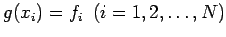
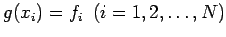
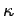

Inhalt Index DeskTop Bronstein

 Numerische Mathematik Darstellung von Kurven und Flächen mit Hilfe von Splines Kubische Splines Interpolationssplines
Numerische Mathematik Darstellung von Kurven und Flächen mit Hilfe von Splines Kubische Splines Interpolationssplines


Es seien N Interpolationspunkte gegeben. Der kubische Interpolationsspline S(x) ist durch folgende Eigenschaften eindeutig festgelegt:
Aus diesen Eigenschaften folgt, daß S(x) unter allen 2mal stetig differenzierbaren Funktionen  , die die Interpolationsbedingung  erfüllen, dadurch ausgezeichnet ist, daß
, die die Interpolationsbedingung  erfüllen, dadurch ausgezeichnet ist, daß
gilt (Satz von HOLLADAY). Man sagt auf Grund von (19.230), S(x) hat minimale Gesamtkrümmung, da für die Krümmung  einer ebenen Kurve in erster Näherung gilt (s. Abschnitt Krümmung und Krümmungskreis). Darüber hinaus läßt sich zeigen: Legt man durch die Punkte ein dünnes, elastisches Lineal (engl. Spline), so wird seine Biegelinie durch den kubischen Interpolationsspline S(x) beschrieben.